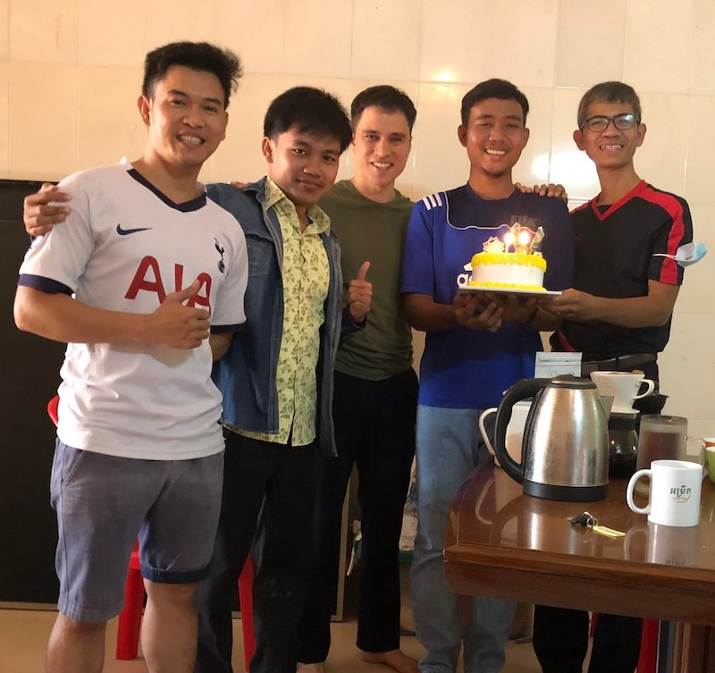
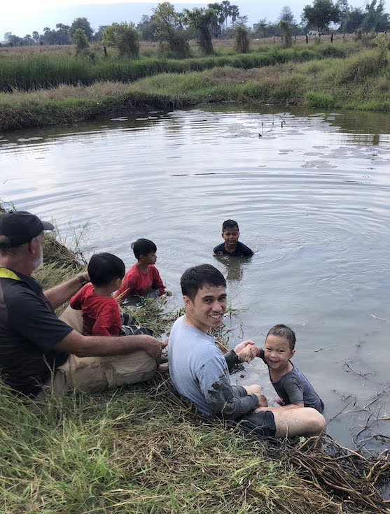

Wheels A Turnin'
Ladies dancing at our Christmas service Ryan’s PPBS Sports Day Team Anna Claus Samuel doing well after an infection Jonathan playing in Preah Vihear Brothers and Sisters,
A lot has happened since we have written last and even thinking about it all writing this update has given us countless reasons to praise God (again!) for His faithfulness and sovereignty.
It’s been a busy season and since October, we’ve had our fair share of sicknesses from difficulty breathing for Samuel to shoulder & neck pain for Ryan, to mild infections, and the usual bumps and bruises. We’ve had some visits from rats as well as flooding on our ground floor and much more! In the midst of all these events, God has made His presence with us that much sweeter. We know prayers have made the difference! The holiday season was cause for endless praises and now as things continue to smooth out (at least in regard to having our third child), we have found a routine, more or less.
Ministry Since Last October
Local Church
 Men’s Small Group! Our involvement at our church continues to be just as regular members, which seems to be a good role for us and for where the church in Cambodia is right now. There are second and even a handful of third generation Christians now, and missionaries and local church leaders alike agree that the next step is for the Cambodian church to learn to “stand on its own”. At the same time, we try to be active church members as opportunity allows, as any follower of Christ should be.
Until just a few days ago, COVID restrictions have been very light and because of this, we have been given opportunities to spend more time with our church in past few months.
The young men’s small group has been meeting consistently even when it had to be online, and this group has been a great encouragement for Ryan. It has been a joy to have a group of young men to share life and sorrows with, as we encourage and receive encouragement during different stages of life. Lately we have been taking turns leading discussion through the Psalms, and then even more recently starting to go through 1 Timothy. The group selected 1 Timothy in light of our desire to wrestle through how church should be conducted, and what that means for us as young men.
2022 was supposed to be the year that the women’s small group started meeting again, but unfortunately just as it was starting to get going, COVID concerns put it on hold until further notice. We are not yet sure if they will try to meet online or just wait further until things change again.
Ryan has also really enjoyed meeting with our pastor, pastoral intern, and another local pastor for coffee once a week to talk through exegetical questions we’re running into whether in our sermon preparation or elsewhere. It has been a blessed time just being in the Word with these men of God.
Overall, we have a lot to be grateful for. Perhaps especially coming out of COVID restrictions, as well as other trials and issues that have come in the church, it seems like members who have stayed are refocused and more intentional about the time we have together. Some members of the church who we didn’t get to know before seem more open and there seems to be a greater spirit of cooperation and a desire for fellowship (not in the sense of sharing a meal per se, but in the sense of sharing our lives together).
Please pray with us that this would not stop as the COVID situation changes, but on the contrary, that it would provide further opportunity to demonstrate the love of Christ to each other and to the watching world.
Phnom Penh Bible School
Hanging out with students We have also been able to spend much more time with the students at the Phnom Penh Bible School.
The difference between teaching online last semester and teaching in person this semester has been night and day. We’ve been seeking more ways to invest in the students’ lives and ministries and God has blessed that. Earlier in the semester we were hoping that holding office hours would invite students to come visit (similar to Ryan’s experience at Master’s College), but that didn’t really pan out, or fit with Khmer culture. One student explained that for Cambodians, it wouldn’t work well since they are “ក្រែងចិត្ត” (“khraing jett”) - despite my repeated assurances to the contrary, they just can’t shake the feeling that they would be bothering me while I’m working.
Instead we’ve been trying to join in with student activities and meals, and that has been much more fruitful. It takes up more energy in a lot of ways, and we’re tired to be sure, but it’s been very rewarding as well. One approach we’re taking is just bringing the kids to the Bible school once a week in the evening, and playing sports with the students before sharing dinner with them. Rebekah has had good conversations with many of the female students (who flock to the kids!) and it has opened up opportunities to get to know students in a different way for Ryan as well.
Especially with COVID getting worse here this last week we’re reminded that a sacrifice as small as that is more than worth it, if we can just invest more into their lives, even just a little bit.
I’m reminded of a book I read when we first came to Cambodia, Bonhoeffer’s Seminary Vision: A Case for Costly Discipleship and Life Together by Paul House. Following Bonhoeffer’s model, House makes the case that Biblical teachers cannot be just a talking head, but rather need to share in the lives of their students - “life together”. The same is true for church of course as well, and that seems to be a big emphasis of the book, that while a Bible school is not the church, the method of discipleship shares common principles, including the importance of just sharing life. Keeping a safe distance from our church or our students takes less effort and is safer as well, for the further you reach into someone’s life, the more likely it is that you’ll get pulled into their problems, and find yourself bearing their burdens. On the other hand, that is the very situation in which we are able to do the most help, as we battle the lies of the world and the devil and the deceitfulness of sin together through careful application of the Truth of His Word.
Ryan preaching at the PPBS Christmas Event Of course, we’re not recommending everything that Bonhoeffer said and did, but we did appreciate this principle and believe it to be necessary within the Body of Christ.
All that to say - it is easy to just teach a lecture and leave, and of course there is merit and a place for that as well in certain circumstances. But we are hopeful that as we share our lives with students, then God’s grace would bless the effort.
Christmas Celebration
We also joined the Christmas celebration and Ryan was given the opportunity to preach. He chose to preach on Matthew 1, using Isaiah to explain the meaning of “Immanuel” as the child who was born to live with us, reign over us, and ultimately die for our sins.
Translation work at the ACTION office
Lunch with the ACTION Translation Team Ryan’s contribution to this work is pretty minimal, around one morning a week. But we have been excited about the work that the translation team has been putting out and our continued cooperation for the gospel. Lately we have been working together to develop resources that can be used as classroom readings for Ryan’s current John class and the upcoming Romans and Hebrews classes next semester.
Visiting Preah Vihear Province
We also had a great opportunity to visit Preah Vihear Province (henceforth “PV”) for a week in January. PV borders both Thailand and Laos, and is relatively undeveloped in comparison to other parts of Cambodia.
Students and teachers praying together at the end of the teachings (Preah Vihear School of Applied Ministry) Our teammates Bora and Bunry were invited to teach for Bible school there. (For another missionary’s summary of the trip, click here). We came mostly just to see and learn. As we’ve mentioned before, we have made it our aim to help local Cambodian churches grow (in terms of health, not size) to the point where the Great Commission burns in their hearts and minds and they embrace it as their own. At that point there will be no stopping things - the gospel will go out to unreached peoples both inside Cambodia and out, around SE Asia and beyond, by means of the Cambodian church.
However, while the nature of our goal has become more clear over time, we are still prayerfully considering what our role in working towards that goal is. We might end up staying at the Phnom Penh Bible School indefinitely, in order to pour into students here, but we are also considering going to a different province to invest in churches and pastors that have less access to Biblical teaching than in Phnom Penh. Our hope was that visiting PV would help us to understand the bigger picture of what’s going on in Cambodia outside of the capital (Phnom Penh).
There are several providential arrangements, and there were many things we learned as the week progressed. For example, we had assumed that many students who graduate from high school would want to go to Phnom Penh given the chance, but that church and community leaders would be more cautious out of concern that the students would never come back. However, one church leader (who has travelled and served widely throughout Cambodia) expressed that he actively encourages students to go to Phnom Penh, and gain from opportunities there before eventually coming back. In his perspective, this was the best way that many students could help PV in the long run.
 Washing off after mudfishing in PV! For us, this particular insight was helpful for us in thinking through what’s next for us: whether to go out to a province and focus on churches and people in that province (with students from a wider range of ages, economic backgrounds, etc.), OR to stay in Phnom Penh and have a broader (but perhaps less deep?, more limited in time- four years) impact on students from throughout Cambodia.
We’ll share more in a future update, but overall we’re grateful to be able to join, and if nothing else we were encouraged about the work that God is doing in PV through His faithful servants.
Other memories from these past few months
Our church was able to have a Christmas service (a big evangelistic opportunity in Cambodia) with much singing and dancing, and a blessed time hearing the Word preached as well.
All of us - maybe especially Jonathan and Samuel - have enjoyed going to the park once a week with members of the church to play sports and play at the playground.
Hoping to be a source of encouragement and support to our teammates, we’ve been meeting regularly and it’s been a great gift!
For His glory,
Ryan and Rebekah